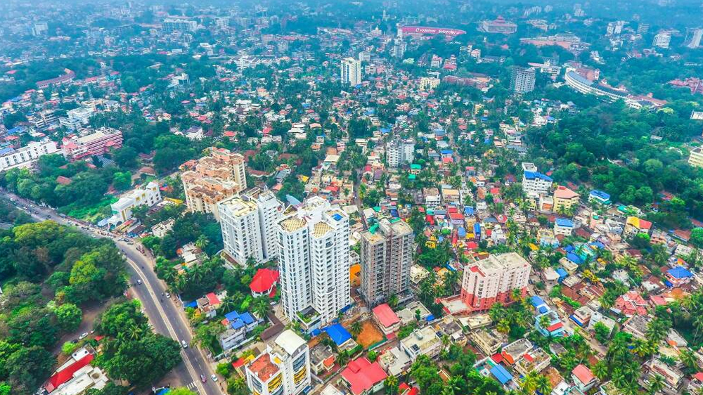
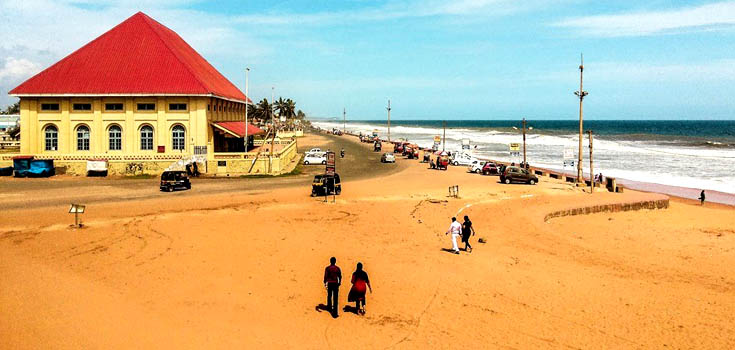

Trivandrum is the capital of Kerala.
Trivandrum is a notable academic and research hub.
It is the most populous city in Kerala .
TOURIST PLACES
Go to Padhmanabha Swamy templeGo to Museum
Go to Kovalam
Go to Shangumugham
TRIVANDRUM DISTRICT
Padhmanabha Swamy temple

At a distance of about 2 kms from Trivandrum Central Railway Station, Sri Padmanabhaswamy temple is a famous Hindu temple dedicated to Lord Vishnu,located in the Fort Area.
The temple is one of the 108 Divyadesams of Lord Vishnu and among the popular temples in India .
The main deity is seen in reclining position over the serpent Anantha or Adi Sesha. The temple depicts a blend of Kerala and Dravidian styles of architecture.
Padmanabha Kshetram and its properties were controlled by Ettuveetil Pillamar under the guidance of Ettara Yogam. Later, Marthanda Varma defeated the Pillamar and his cousins took over power. The temple was renovated majorly by King Marthanda Varma, Maharaja of Travancore in the mid of 17th century.
Museum

It is a rare specimen of workmanship in the traditional Travancore style of architecture. The Museum displays paintings and various priceless collections of the royal family.
The name Kuthira Malika means 'Palace of Horses' and is derived from the frieze of 122 wooden horses on the exterior walls. The Palace was constructed with teak, rosewood, granite and marble.
The palace includes two thrones - one is made entirely from elephant tusks and the other from Bohemian crystal.
Kovalam

Often called the 'Paradise of the South', Kovalam is one of the wonderful Kerala beach destinations. Kovalam means 'A grove of coconut trees and the whole area beyond the shores around Kovalam is filled with the endless sight of coconut trees offering magnificent views while approaching the beach.
Kovalam gained importance when Maharani Sethu Lakshmi Bai, the Queen of Travancore, built a palace, the Halcyon Castle on the top of a rock near the beach in the 1930s.
Thereafter the place was brought to the public eye by her nephew the Maharaja of Travancore.
After Independence, Kovalam was relatively unknown but it gained popularity in the 1970s when hippies arrived here and changed this fishing village into a tourist destination with their wild parties.
Shangumugham
At a distance of about 10 kms from Trivandrum Central Railway Station, Shanghumugham Beach is a famous beach around Trivandrum.
The huge sculpture of a Nymph (Jalakanyaka) made by the famous sculptor Sri Kanai Kunjuraman and a restaurant shaped like a star fish are added attractions here.
The beach is more crowded during the weekends and local holidays. Sunset at this beach is worth watching. The Chacha Nehru Traffic Training Park here attracts children and helps them to learn the traffic rules.
During temple festivals the beach witnesses ritual washing of temple idols.